database-system-concepts-5
Ｅ-Ｒ模型：Entity-Relationship Model
世界是由一组称作实体(entities)的基本对象和这些对象之间的联系(relationships)构成的
基本E-R图
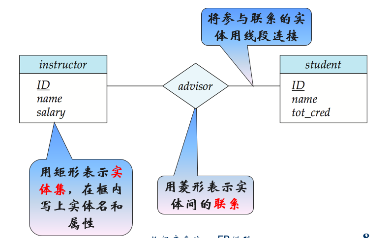基本概念
实体(Entity)
- 客观存在并可相互区分的事物叫实体(唯一标识)
具体的：如学生张三、汽车鲁A12345……
抽象的：如软件学院、数据库系统课程……
实体集(Entity Set)
是具有相同类型及即具有相同性质(属性)的实体集合
- 全体学生，全部课程，所有学院……
组成实体集的各实体称为实体集的外延(
Extension)实体集可相交
属性(Attribute)
定义：实体集中每个成员具有的描述性性质
一个实体可以由若干个属性来刻画和描述
- 例如，学生可由学号、姓名、年龄、性别等属性描述
属性的类型
简单属性 (
Sample Attribute)- 不可再分的属性
- 如年龄、性别
- 不可再分的属性
复合属性(
Composite Attribute)- 可以划分为更小的属性
- 可以把相关属性聚集起来，使模型更清晰
- 如电话号码=区号+本地号码
单值属性(
Single-valued Attribute)- 每一个实体在该属性上的取值唯一(
unique)- 如教师的编号，姓名、工资等
- 每一个实体在该属性上的取值唯一(
多值属性(
Multi-valued Attribute)- 每一个实体在该属性上有多于一个的取值
- 如教师实体集中的phone-number属性
- 每一个实体在该属性上有多于一个的取值
派生(
Derived)属性与基(Base)属性- 可以从其他相关的属性或实体派生出来的属性值
- 如教师(编号，姓名，出生日期，年龄)，其中年龄即为派生属性
- 数据库中，一般只存基属性值，而派生属性只存其定义或依赖关系，用到时再从基属性中计算出来。但是不排除基属性和派生属性均保存在数据库中的现象（为了提高性能）
- 可以从其他相关的属性或实体派生出来的属性值
属性的符号体系
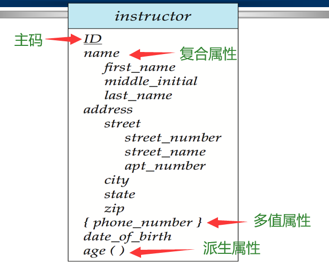域(Domain/Value Set)
属性的取值范围
- 例如，性别的域为(‘0’、‘1’)，月份的域为1到12的整数
实体集的属性是将实体集映射到域的函数
实体可表达为<属性，数据值>的集合
- 例如，一个customer实体可以用集合
1
2
3
4{(customer-id, 677-89-9011),
(customer-name, Hayes),
(customer-street, Main),
(customer-city, Harrison)}
联系(Relationship)
联系是 个实体集上的数学关系，这些实体集不必互异。
- 例如为个实体集，这个实体集之间的联系集是：的一个子集。
更具体的，实体之间的相互关联
- 如学生与老师间的授课关系，学生与学生间有班长关系
联系也可以有属性
同类联系的集合称为联系集
元或度(Degree)
- 参与联系的实体集的个数称为联系的元(或者度)
- 如学生选修课程是二元联系，供应商向工程供应零件则是三元联系
参与(Participation)
实体集之间的关联称为参与，即实体参与联系
- 如“王军”选修“数据库系统”，表示实体“王军”与 实体“数据库系统”参与了联系“选修”
如果实体集E中的每个实体都参与到联系集R中的至少一个联系，则称
如果实体集E中只有部分实体参与到联系集R的联系中，则称
- 如课程和院系之间的“建设”联系，每门课都由一个学院负责建设，课程全部参与“建设”联系；但是有些学院可以不负责建设课程，学院部分参与“建设”联系。
角色(Role)
实体在联系中的作用称为实体的角色
由于参与一个联系的实体集通常是互异的，角色是隐含的一般不需要指定
当同一个实体集不止一次参与一个联系集时，为区别各实体的参与联系的方式，需要显式指明其角色
- 如学生与学生间的“班长”关系，职工与职工之间的“管理”关系，课程之间的“先行”关系
映射的基数(Mapping Cardinalities)
实体之间的联系的数量，即一个实体通过一个联系集能与另一实体集相关联的实体的数目
可以有一对一的(
1:1)，一对多的(1:m)，多对多的(m:n)这几种情况- 注意没有 “多对一”！！！
用箭头或线段来表示联系的映射基数，除了课本的表示方法以外，还有其他的表示方法
或者
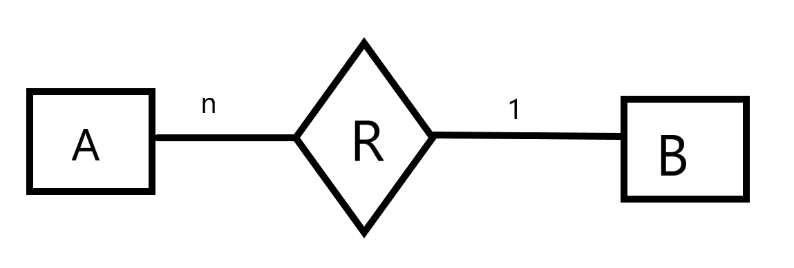二元联系集的映射基数
- 一对一
- 两个实体集E1和E2, E1中的一个实体与E2中至多一个实体相联系，并且E2中的一个实体与E1中至多一个实体相联系
- 如一个教师至多指导一个学生，一个学生至多被一个教师指导
- 一对一不是一一对应
- 两个实体集E1和E2, E1中的一个实体与E2中至多一个实体相联系，并且E2中的一个实体与E1中至多一个实体相联系
- 一对多
- 两个实体集E1和E2, E1中的一个实体与E2中n(n≥0)个实体相联系，并且 E2中的一个实体与E1中至多一个实体相联系
- 如一个教师指导多个学生，一个学生至多被一个教师指导
- 两个实体集E1和E2, E1中的一个实体与E2中n(n≥0)个实体相联系，并且 E2中的一个实体与E1中至多一个实体相联系
- 多对一
- 两个实体集E1和E2, E1中的一个实体与E2中n(n≥0)个实体相联系，并且 E2中的一个实体与E1中至多一个实体相联系
- 如一个教师至多指导一个学生，一个学生可以被多个教师指导
- 两个实体集E1和E2, E1中的一个实体与E2中n(n≥0)个实体相联系，并且 E2中的一个实体与E1中至多一个实体相联系
- 多对多
- 两个实体集E1和E2, E1中的一个实体与E2中n(n≥0)个实体相联系，并且 E2中的一个实体与E1中m(m≥0)个实体相联系
- 如一个教师可以指导多名学生，一个学生可以有多名导师
- 两个实体集E1和E2, E1中的一个实体与E2中n(n≥0)个实体相联系，并且 E2中的一个实体与E1中m(m≥0)个实体相联系
一个实体集内的二元联系
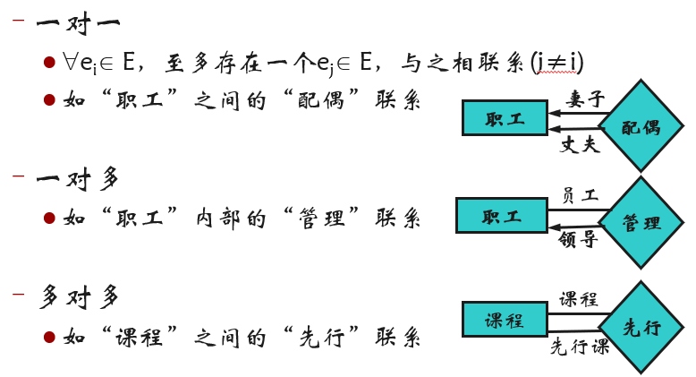多个实体集间联系的情况
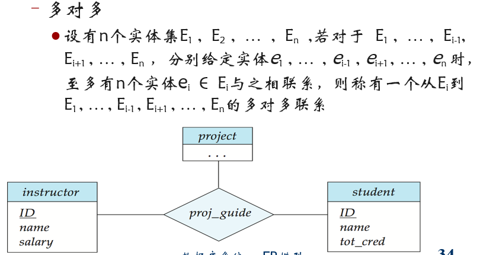 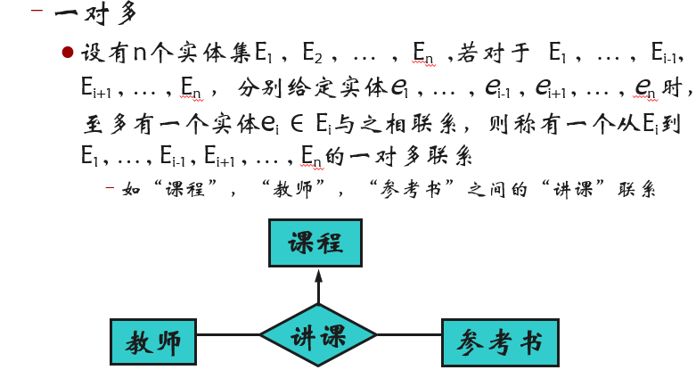基数约束
基本的基数约束：
- m:1，m:n，1:1
更精确的基数约束：
- 给出上下界约束 l…h
- 0…*等价于“多”
- 0…1等价于“一”
弱实体集（Weak Entity Set）
弱实体定义
一个实体的所有属性合在一起都不足以形成主码，则称这样的实体为弱实体；同一类型的弱实体形成弱实体集
- 也就是说弱实体所有属性合在一起也是可能重复的
反之称为强实体
弱实体需要依赖属主实体而存在，不能独立存在
弱实体提出的背景
存在一些需求场景，需要研究：
- 一个实体的属性与其它实体之间的关系
- 或者属性之间相互的关联关系
E-R图中联系是实体与实体之间的联系。在研究属性参与的联系时，需要进行属性实体化
- 某些属性实体化之后，实体可以独立标识，如电话；
- 某些属性实体化之后，实体自身无标识属性，如账户交易；
属性实体化后，不能独立标识，形成弱实体
举例：银行交易与结息
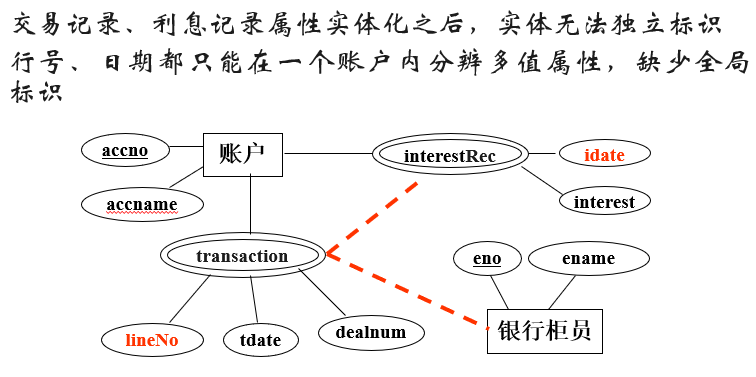其中双椭圆内代表该属性为多值属性。
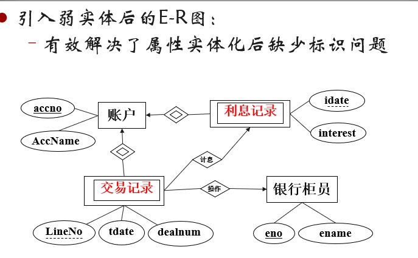其中双矩形内为弱实体。
弱实体集与存在依赖
弱实体集必然存在依赖于强实体集(
Strong Entity Set)弱实体集与其拥有者之间的联系称作标识性联系(
identifying relationship)弱实体集与强实体集之间是一对多的联系
- 比如上面的交易记录与账户
存在依赖并不总会导致一个弱实体集，从属实体集可以有自己的主码
- 如实体集信用卡(信用卡号，客户帐号，金额)，它存在依赖于客户实体集，但信用卡有自己的主码信用卡号。
分辨符(Discriminator)
分辨符是弱实体集中用于区别依赖于某个特定强实体集的属性集合。也称作部分码(
partial key)也就是说，我们用分辨符来判断该弱实体集依赖于哪个强实体集
如“交易记录”中的交易号
弱实体变为强实体，主码由该弱实体集所存在依赖的强实体集的主码和该弱实体集的分辨符组成
为什么使用弱实体集？
通过为弱实体集加上合适的属性，可转变为强实体集，为什么还要使用弱实体集？
避免数据冗余(强实体集码重复)，以及因此带来的数据的不一致性
弱实体集反映了一个实体对其它实体依赖的逻辑结构
弱实体集可以随它们的强实体集的删除而自动删除
弱实体集的引入
作为层次结构的一部分
实体集的一些多值、复合属性可以抽取出来作为弱实体集
如果弱实体集不但参与和强实体集之间的标识性联系，而且参与和其它实体集的联系，或者弱实体集本身含有很多属性，则将其表述为弱实体集
如果弱实体集只参与和强实体集之间的标识性联系，或者弱实体集本身属性不多，则将其表述为属性
弱实体集在Ｅ-R图中的表示
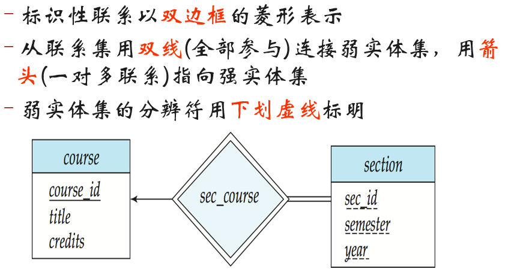E-R模型向关系模式的转换
根据E-R图建立数据库模式的步骤
E-R图转换为表并进行必要的合并
- 本步骤可以按照机械方法完成
- 一个良好的E-R图，完成本步骤转换和合并得到的结果，已经是比较理想的数据库模式
- (尽管还有人工进一步优化的余地)
优化
- 本步骤无具体可行的机械方法，主要依靠设计人员的经验和能力
E-R图转换为表（关系）
- 用具有n个不同属性的模式E来表示强实体集。
course(course_id, title, credit)
- 用具有n个不同属性的模式E来表示强实体集。
用包含标识性强实体集的主键作为列构成的表来表示弱实体集
section ( course_id, sec_id, semester, year )
E-R关系中的主键仍然是表的主键，复合属性在表（关系模式）中只保留所有叶子属性，多值属性单独建表。
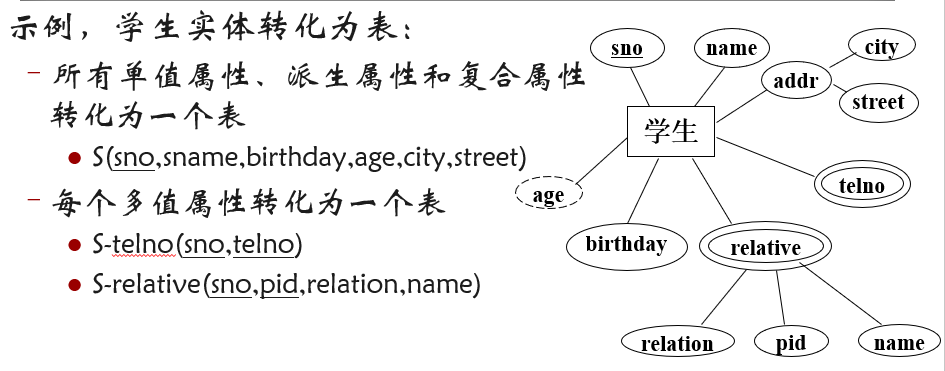每个联系转化成一个表
表的属性：参与联系实体的主码，以及联系自身的属性
表的超码：参与联系的实体集的主码的集合形成了联系集的超码
在联系转化成的表中：
- 实体主码形成的属性 均应
not null - 只有在联系转化成的表与其他表合并后，才可能允许为
null
- 实体主码形成的属性 均应
如果实体集的主码重名:
- 如果在不同的实体集中出现了主码属性名称不唯一的情况，应该以实体的名字加上属性的名字形成唯一的属性名；
- 如果一个实体集不止一次地参加了某个联系集，则角色名可代替实体集的名字形成唯一的属性名。
表的合并问题
二元一对一联系
联系转化的表可以与任一端实体转化成的表进行合并
二元一对一联系不能导致相关实体转化成的表合并
- 也就是说，实体转化成的表不能进行合并
- 联系转化成的表也不能进行合并
举例
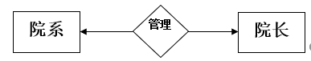转化成的表：
1 | Dept(dno, dname) |
合并：
可以：
或者：
不能进行下述合并：
二元多对一联系
- 联系转化的表可以和 “多端” 实体转化成的表进行合并
- 不能和单端转化成的表进行合并
示例
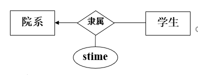转化成的表：
1 | Dept(dno, dname) |
表的合并：
- //
dno可以为空值 dno可以为空的原因在上面的联系关系中有说明
二元多对多联系
- 将联系定义为新的关系，属性为参与双方的主码和联系的描述性属性，不能进行合并
多元联系
联系转化的表和实体转化的表不能进行合并
即便是m:n:1,其转化的表和也不能进行合并
示例
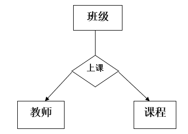转化成的表：
1 | Class(classno, classname) |
无法进行表的合并
例子与练习
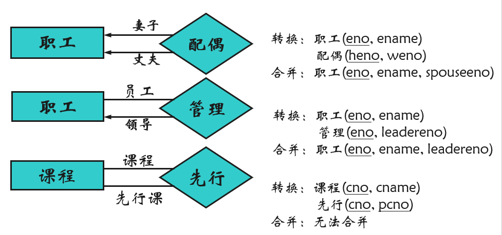 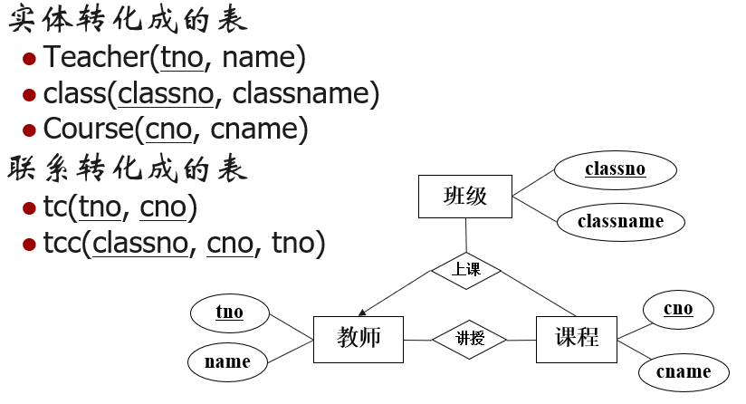供应关系为三元多对多：
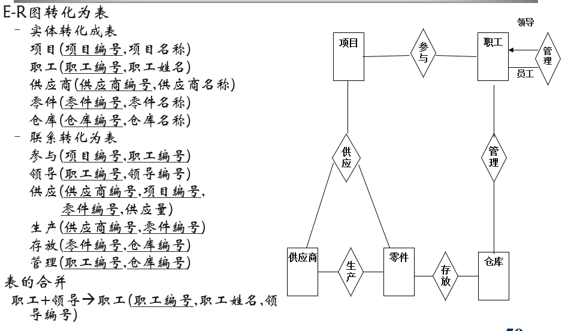关于模式优化的思考
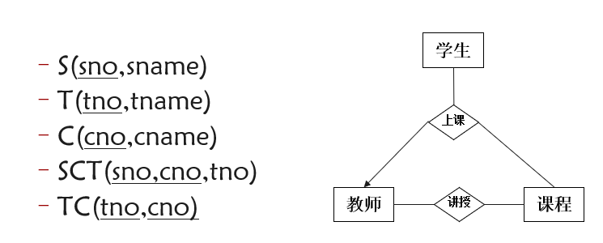 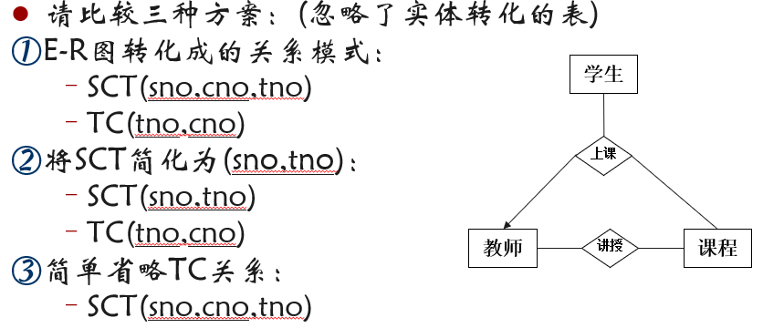显然方案1或2更合适
E-R模型设计要点
实体与联系
当描述发生在实体间的行为时，采用联系集
- 很多情况下，实体和联系都可以接受；
- 此时能用联系不用实体，以图简化E-R；
- 通常来说，名词用实体，动词用联系
实体 Vs 属性
- 属性可以简化ER图
- 实体有多方面性质，属性没有
属性vs联系
二元 Vs 多元
注意：多元联系不等于多个二元联系。比如：
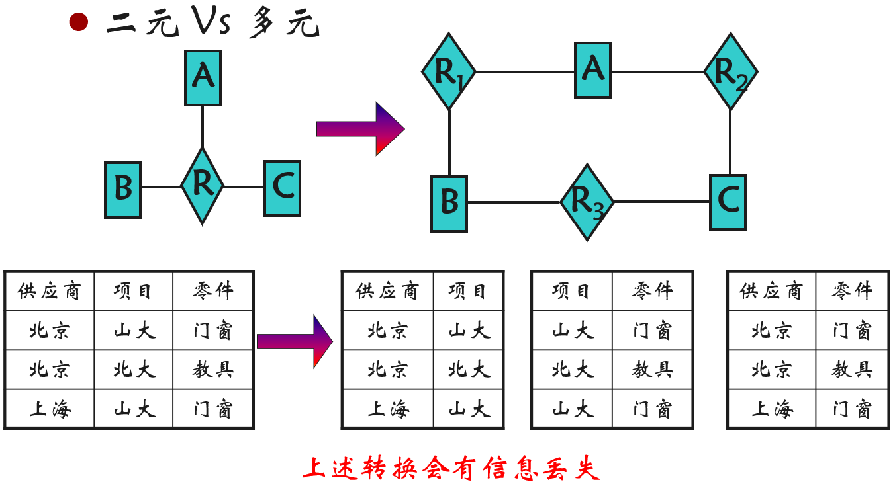- 多元转换为二元
新构建一个实体集E，若R有属性，则将其赋予E，为E添加一个标识属性作为主码，构造三个新联系集 ，对每个，在E中创建一个新实体 ，然后在 中分别加入联系 。
- 缺点：浪费存储空间；语义不清晰，难于体现参与联系的各方实体
数据库设计过程
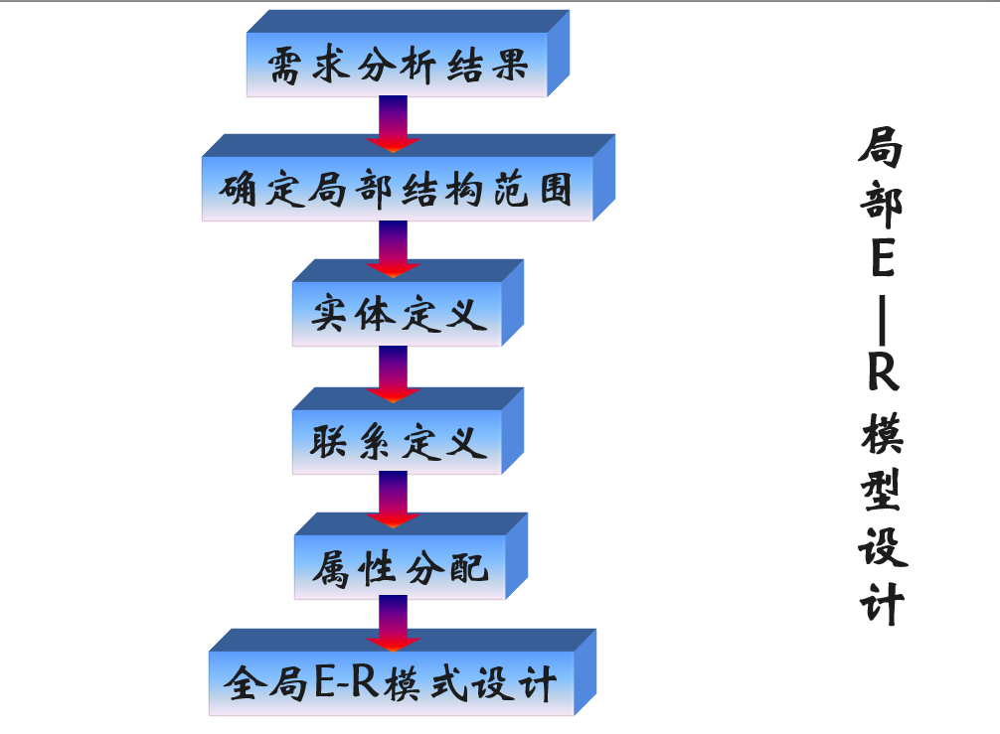 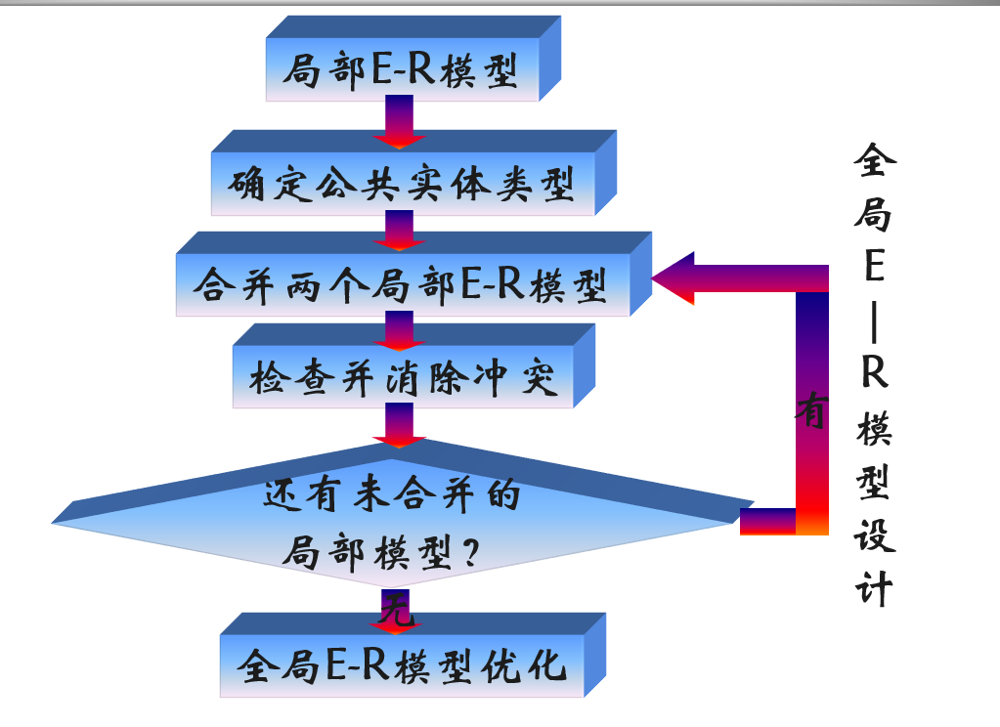消除冲突
属性冲突
- 属性域的冲突：属性的类型、取值范围不同
- 如不同学校的学号编码方式不同
属性取值单位冲突
- 如重量分别采用磅、千克
命名冲突
- 同名异义：不同意义的对象具有相同的名字
- 异名同义：同一意义的对象具有不同的名字
结构冲突
- 同一对象在不同应用中的抽象不同
- 如职工在某应用中是实体，在另一应用中则抽象为属性
- 同一实体在不同E-R图中属性组成不同
- 实体之间的联系在不同E-R图中呈现不同的类型
- 同一对象在不同应用中的抽象不同
扩展E-R特性
特殊化(Specialization)
自顶而下设计过程; 实体集可能包含一些子集，子集中的实体在某些方面区别于实体集中的其他实体
这些子集变为低层次的实体集，拥有不适用于高层次实体集的属性或一些部分参与的关系
在E-R图中，特殊化用从特殊化实体指向另一个实体的空心箭头来表示，我们称这种关系为IS-A关系 (E.g., instructor “is a” person)
属性继承
- 高层实体集的属性可以被低层实体集继承。低层实体集(或子类)同时还继承地参与其高层实体(或超类)所参与的实体集
特殊化关系还可能形成超类 – 子类 联系
概括(Generalization)
自底而上的设计过程– 多个实体集根据共同的特征综合成一个较高层的实体集
概括只不过是特殊化的逆过程; 在E-R图中，我们对概化和特殊化的表示不作区分
特殊化和概括的约束
实体可以属于给定低层次实体集成员的约束
- 条件定义的
- 例如: 65岁以上的所有顾客在senior-citizen entity 集合中; senior-citizen ISA person.
- 用户定义的
- 条件定义的
另一类约束涉及在一个概化中一个实体集是否可以属于多个低层实体集
- 不相交(Disjoint)
- 不相交约束要求一个实体至多属于一个低层实体集。
- 重叠(Overlapping)
- 同一个实体可以同时属于同一个概化中的多个低层实体集
- 不相交(Disjoint)
完全性约束：定义高层实体集中的一个实体是否必须至少属于该概化/特殊化的一个低层实体
- 全部概化: 每个高层实体必须属于一个低层实体集。
- 部分概化: 允许一些高层实体不属于任何低层实体集。
属性继承(Attribute Inheritance)
特殊化中涉及过。
聚集(Aggregation)
背景示例
请用E-R图表示如下关系
客户和项目之间存在着订购关系
某些订购需要第三方(银行)提供担保
思考：如何表示？
问题本质，担保的是“订购”联系
实体和联系之间不能建联系
所以下面的E-R模型是错的：
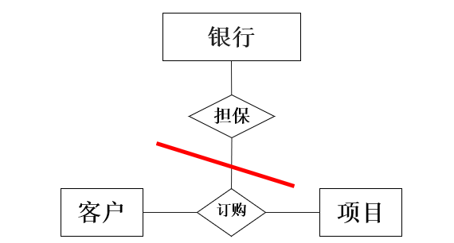聚集
可以将联系和参与联系的实体聚集为高层实体
高层实体可以和其它实体产生联系
例如：客户、项目及订购联系聚集成的高层实体，可以和银行之间建立担保联系
不用聚集如何表示
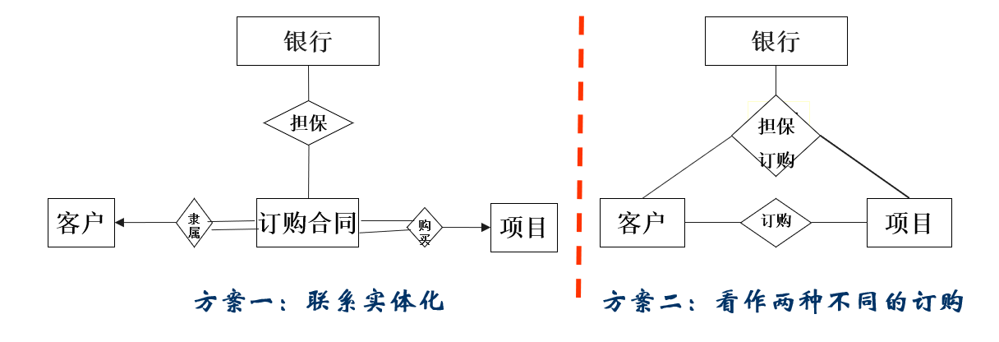如果方案二将两种订购分开，以避免冗余，但如果订购的担保方案改变，会导致数据库的不一致与额外处理。而且在查表时涉及更多的集合并运算，所以方案一更好一些。
继承转化为关系模式
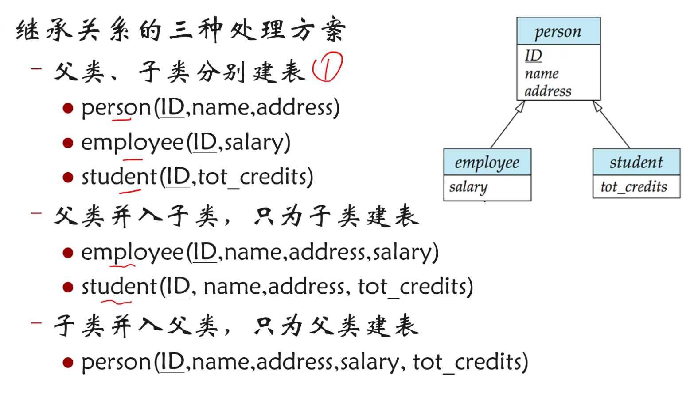（1）跟现实世界更相符，但是查询性能差，有一定的数据冗余。
（2）没有冗余（较少），效率较好。存在一个问题，如果一个类既不属于employee也不是student，方案二就会出现问题。
（3）会导致大量冗余